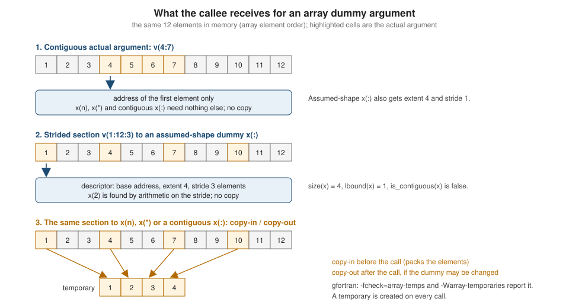

Array Arguments: Assumed Shape, Size and Rank
|
This content was generated with the assistance of AI and should be verified against the official documentation before being relied on in production. |
This page is written against Fortran 2023 (ISO/IEC 1539-1:2023, J3 final draft J3/23-007r1) and was checked on
2026-10-18 with GNU Fortran 16.2 and LLVM Flang 23. Array dummy arguments are where most of the practical rules of array
programming meet: what the callee is told about the extents of the array it receives, what bounds it sees, whether the
data is contiguous, and what the compiler has to do (pass an address, pass a descriptor, or build a temporary copy) to
make the actual argument fit the dummy argument. Five forms of array dummy exist, and the choice among them decides the
interface rules, the cost of the call, and which intrinsics and constructs the callee may use. The page covers them in
the order in which they are usually met: explicit-shape and assumed-shape dummies, lower bounds, assumed-size dummies and
sequence association, assumed-rank dummies with select rank, and contiguity with array temporaries, followed by a
selection guide.
Array declarations, sections and whole-array operations are on
Arrays Fundamentals, allocatable and pointer arrays on
Allocatable Arrays and Dynamic Memory and
Pointers and Targets, the intrinsics that inquire about and
reduce arrays on
Array Intrinsics and Reductions, and the Fortran
2023 rank-independent features (typeof, @ subscripts) on
Generic and Rank Independent Programming.
The general rules of argument association, intent and explicit interfaces are on
Procedures, Functions and Subroutines.
Every example belongs to the heatflow scenario (a two-dimensional heat-diffusion solver; its stencil kernels in
heatflow_kernels take u(:, :) dummies) and uses its names (dp for real64), but each one is a complete,
self-contained file that can be extracted and run on its own. Unless a paragraph says otherwise, every example compiles
without warnings under gfortran -std=f2023 -Wall -Wextra -pedantic -fimplicit-none -fcheck=all and was also built and run
with LLVM Flang 23, and the output shown is what it printed. Examples that are deliberately wrong are labelled as
non-conforming, say so in a comment on their first line, and show the real compiler messages. The -fcheck=all option
includes -fcheck=array-temps, so some correct programs below print a run-time warning from gfortran about an array
temporary; the warning is shown next to the output because it is part of the story.
The five array dummy forms
A dummy argument that is an array is declared with one of the array specifications of 8.5.8 of the standard. They differ in what the callee is told by the declaration and what it must learn some other way.
| Form | Declaration | What the dummy takes from the actual argument | Interface required at the call |
|---|---|---|---|
Explicit-shape |
|
Only the element sequence, starting at the first element. The extents are whatever the declaration says (8.5.8.2). |
No. The call may use an implicit interface. |
Assumed-shape |
|
The shape (all extents) and the stride of each dimension, through a descriptor. Lower bounds are 1 unless written (8.5.8.3). |
Yes, always (15.4.2.2, item 4b). |
Assumed-size |
|
Only the size, as an element sequence. The last dimension has no extent and no upper bound (8.5.8.5). |
No. A call through an implicit interface is allowed. |
Assumed-rank |
|
The rank, the extents and the strides: everything, including the rank itself, which may be zero (8.5.8.7). Lower bounds are 1. |
Yes, always (15.4.2.2, item 4c). |
Deferred-shape |
|
The bounds and the allocation or association status of the actual argument, which must itself be allocatable or a pointer (8.5.8.4). |
Yes, always (15.4.2.2, item 4a). |
Three observations organise the rest of the page. First, the assumed-shape and assumed-rank forms need an explicit
interface at every call: the caller must build a descriptor, and it can only do so if it knows the callee’s dummy
argument is of that form, which in practice means putting the procedure in a module. Second, the explicit-shape and
assumed-size forms need the actual argument to be a contiguous element sequence, so a section that is not contiguous
must be packed into a temporary and, for a dummy that is changed, unpacked afterwards. Third, only the assumed-shape and
assumed-rank forms (and the contiguous variants of them) let the callee ask the array about itself with size,
shape, lbound and ubound, and so avoid passing the extents separately and getting them wrong.
The figure below shows what the callee actually receives in the three situations that matter; a flowchart at the end of the page selects a dummy form from the requirements.

Explicit-shape and assumed-shape dummies
An explicit-shape dummy array is declared with bounds that are constants or specification expressions. The extents are
exactly what the declaration says, whatever the actual argument has: the dummy argument u(nx, ny) is associated with
the first nx * ny elements of the element sequence of the actual argument (15.5.2.5), and the number of elements of the
dummy must not exceed the number of elements of the sequence (15.5.2.12). The bounds may be written with the extents of
other dummy arguments (u(nx, ny)) or inquiry functions (work(size(u, 1))), which are determined once, on entry
(8.5.8.2).
An assumed-shape dummy array is a nonallocatable, nonpointer dummy declared with colons: u(:, :). It takes its shape
from the actual argument: the extent in each dimension is the extent of the corresponding dimension of the actual
argument, whether the actual argument is a whole array, a section (even a strided one), the result of an expression or
an array pointer, and the rank of the actual argument must be equal to the number of colons (15.5.2.5). The dummy is
associated with the actual argument and not with a copy: nothing is moved, and the compiler passes a descriptor (base
address, extents, strides) instead of just an address.
module heatflow_kinds
use, intrinsic :: iso_fortran_env, only: real64
implicit none
private
public :: dp
integer, parameter :: dp = real64
end module heatflow_kinds
module heatflow_array_args
use heatflow_kinds, only: dp
implicit none
private
public :: mean_explicit, report_assumed_shape, report_lower_bound, interior_mean
contains
! Explicit-shape dummy: the caller supplies the extents, the callee trusts them.
pure function mean_explicit(nx, ny, u) result(m)
integer, intent(in) :: nx, ny
real(dp), intent(in) :: u(nx, ny)
real(dp) :: m
m = sum(u) / real(nx * ny, dp)
end function mean_explicit
! Assumed-shape dummy: shape and extents come from the actual argument,
! the lower bounds are always 1.
subroutine report_assumed_shape(label, u)
character(len=*), intent(in) :: label
real(dp), intent(in) :: u(:, :)
print '(a, ": shape ", 2i3, " lbound ", 2i3, " ubound ", 2i3)', &
label, shape(u), lbound(u), ubound(u)
end subroutine report_assumed_shape
! Assumed-shape dummy with an explicit lower bound: the bounds are
! shifted, the extents still come from the actual argument.
subroutine report_lower_bound(label, u)
character(len=*), intent(in) :: label
real(dp), intent(in) :: u(0:, 0:)
print '(a, ": shape ", 2i3, " lbound ", 2i3, " ubound ", 2i3)', &
label, shape(u), lbound(u), ubound(u)
end subroutine report_lower_bound
! The interior of a grid with a one-cell halo: u(0:nx+1, 0:ny+1) in the caller.
pure function interior_mean(u) result(m)
real(dp), intent(in) :: u(0:, 0:)
real(dp) :: m
integer :: nx, ny
nx = size(u, 1) - 2
ny = size(u, 2) - 2
m = sum(u(1:nx, 1:ny)) / real(nx * ny, dp)
end function interior_mean
end module heatflow_array_args
program shapes_and_bounds
use heatflow_kinds, only: dp
use heatflow_array_args
implicit none
integer, parameter :: nx = 4, ny = 3
real(dp) :: u(0:nx + 1, 0:ny + 1) ! halo grid, bounds 0:5 and 0:4
integer :: i, j
u = 0.0_dp
do j = 1, ny
do i = 1, nx
u(i, j) = real(10 * i + j, dp)
end do
end do
print '(a, 2i3, a, 2i3)', 'caller bounds: lbound', lbound(u), ' ubound', ubound(u)
call report_assumed_shape('whole array u(:,:) ', u)
call report_assumed_shape('section u(1:nx,1:ny) ', u(1:nx, 1:ny))
call report_assumed_shape('section u(2:3,:) ', u(2:3, :))
call report_assumed_shape('strided u(::2,::2) ', u(::2, ::2))
call report_lower_bound ('whole array u(0:,0:) ', u)
call report_lower_bound ('section u(1:nx,1:ny) ', u(1:nx, 1:ny))
print '(a, f8.3)', 'interior_mean(u) =', interior_mean(u)
print '(a, f8.3)', 'mean_explicit(nx,ny,u(1:nx,1:ny)) =', mean_explicit(nx, ny, u(1:nx, 1:ny))
end program shapes_and_boundsThe output is shown first, followed by the warning that gfortran wrote to the error unit; Flang prints the same numbers and no warning.
caller bounds: lbound 0 0 ubound 5 4
whole array u(:,:) : shape 6 5 lbound 1 1 ubound 6 5
section u(1:nx,1:ny) : shape 4 3 lbound 1 1 ubound 4 3
section u(2:3,:) : shape 2 5 lbound 1 1 ubound 2 5
strided u(::2,::2) : shape 3 3 lbound 1 1 ubound 3 3
whole array u(0:,0:) : shape 6 5 lbound 0 0 ubound 5 4
section u(1:nx,1:ny) : shape 4 3 lbound 0 0 ubound 3 2
interior_mean(u) = 27.000
mean_explicit(nx,ny,u(1:nx,1:ny)) = 27.000
At line 79 of file 01_shapes_and_bounds.f90
Fortran runtime warning: An array temporary was created for argument 'u' of procedure 'mean_explicit'What the example shows:
-
The shape comes from the actual argument.
u(:, :)reports the shape of the whole halo array (6 by 5), of the interior section (4 by 3), ofu(2:3, :)and of the strided sectionu(::2, ::2)(3 by 3). The procedure was compiled once and handles all of them without copying anything. -
The lower bounds of an assumed-shape dummy are 1, whatever the actual argument has. The caller’s array is declared
u(0:nx + 1, 0:ny + 1)with lower bounds 0, but insidereport_assumed_shapethe bounds are 1:6 and 1:5. The standard says it in 8.5.8.3: the dummy’s lower bound is 1 unless a lower bound is written, and the upper bound is thens + d - 1for extentsand lower boundd. -
A lower bound can be written.
u(0:, 0:)gives the dummy lower bounds 0 and 0, so a callee can use the same indices as the caller: the whole array has bounds 0:5 and 0:4, and the interior section has bounds 0:3 and 0:2 (the extents are 4 and 3, so the first element has index 0, not 1). The section starts atu(1, 1)in the caller and atu(0, 0)in the callee, which is why interior indices must be computed fromsize, asinterior_meandoes, and never copied from the caller. -
mean_explicitdoes need the extents. It receivesnxandnyfrom the caller and trusts them. Passing the interior sectionu(1:nx, 1:ny)to it is legal, but the section is not contiguous (it skips the halo cells of every column), so gfortran built a temporary, called the function, and copied the result back; that is the run-time warning for line 79. The same call with an assumed-shape dummy costs nothing. -
The dummies can belong to
purefunctions.interior_meanandmean_explicitarepure; the only requirement the assumed-shape form adds is an explicit interface, which a module provides.
The inquiry functions on an assumed-shape dummy are the main reason to prefer the form. size(u, 1) is the extent,
shape(u) the shape, lbound(u) and ubound(u) the bounds, and all of them are always defined, whereas an
explicit-shape callee has to be told the extents and a wrong extent is a silent error. An assumed-shape dummy can also be
zero-sized, in which case every loop over 1:size(u, 1) simply does not execute. An assumed-shape dummy cannot have
the allocatable or pointer attribute (those are deferred-shape), and an assumed-size array cannot be its actual
argument (see below).
The assumed-shape specification can also state its lower bounds with an integer array expression, and the rank with the rank clause, in Fortran 2023. Both are rank-independent spellings of the same dummy argument kinds. They are described with the other F2023 features in the section on lower bounds and the rank clause below.
Lower bounds of dummy arguments
The bounds a callee sees depend on the kind of dummy argument, not on the bounds of the actual argument, and that is the most common source of off-by-one errors when code is moved from explicit-shape to assumed-shape dummies. The rules, all from 8.5.8 and 15.5.2.5 of the standard, are:
| Dummy argument | Lower bound seen by the callee | Notes |
|---|---|---|
Explicit-shape |
As written in the declaration. |
The actual argument’s bounds are irrelevant; only its element sequence matters. |
Assumed-shape |
1. |
The extents come from the actual argument. |
Assumed-shape |
As written (here 0). |
The same lower bound is used for every actual argument. |
Assumed-size |
1, or as written for the last dimension. |
The last dimension has no upper bound (8.5.8.5). |
Assumed-rank |
1 in every dimension. |
The upper bound is the extent, except in the last dimension of an assumed-size actual argument (15.5.2.5). |
Allocatable |
That of the actual argument, which must be allocated. |
The dummy has the same bounds, extents and allocation status (8.5.8.4, 15.5.2.7). |
Pointer |
That of the actual argument pointer. |
An associated pointer keeps its bounds; the pointer remapping that produced them is in Pointers and Targets. |
The following example passes the same arrays to every dummy form and prints the bounds the callee sees.
module heatflow_dummy_kinds
use, intrinsic :: iso_fortran_env, only: real64
implicit none
private
public :: dp, by_assumed_shape, by_allocatable, by_pointer, by_explicit_shape, by_assumed_rank
integer, parameter :: dp = real64
contains
subroutine by_assumed_shape(x)
real(dp), intent(in) :: x(:)
print '(a, 2i4)', ' assumed-shape x(:) lbound, ubound:', lbound(x, 1), ubound(x, 1)
end subroutine by_assumed_shape
subroutine by_allocatable(x)
real(dp), intent(in), allocatable :: x(:)
print '(a, 2i4)', ' allocatable x(:) lbound, ubound:', lbound(x, 1), ubound(x, 1)
end subroutine by_allocatable
subroutine by_pointer(x)
real(dp), intent(in), pointer :: x(:)
print '(a, 2i4)', ' pointer x(:) lbound, ubound:', lbound(x, 1), ubound(x, 1)
end subroutine by_pointer
subroutine by_explicit_shape(n, x)
integer, intent(in) :: n
real(dp), intent(in) :: x(0:n - 1)
print '(a, 2i4)', ' explicit-shape x(0:n-1) lbound, ubound:', lbound(x, 1), ubound(x, 1)
end subroutine by_explicit_shape
subroutine by_assumed_rank(x)
real(dp), intent(in) :: x(..)
print '(a, 2i4)', ' assumed-rank x(..) lbound, ubound:', lbound(x, 1), ubound(x, 1)
end subroutine by_assumed_rank
end module heatflow_dummy_kinds
program bounds_by_dummy_kind
use heatflow_dummy_kinds
implicit none
real(dp), allocatable, target :: a(:)
real(dp), pointer :: p(:), q(:)
allocate (a(-2:3)) ! six elements with bounds -2:3
a = 0.0_dp
p => a(0:3) ! a pointer to a section has lower bound 1
q => a ! a pointer to a whole array takes the array's bounds
print '(a)', 'actual argument: allocatable a(-2:3)'
call by_assumed_shape(a)
call by_allocatable(a)
call by_explicit_shape(size(a), a)
call by_assumed_rank(a)
print '(a)', 'actual argument: pointer p => a(0:3)'
call by_assumed_shape(p)
call by_pointer(p)
print '(a)', 'actual argument: pointer q => a'
call by_assumed_shape(q)
call by_pointer(q)
print '(a)', 'actual argument: section a(0:3) of the allocatable'
call by_assumed_shape(a(0:3))
end program bounds_by_dummy_kindactual argument: allocatable a(-2:3)
assumed-shape x(:) lbound, ubound: 1 6
allocatable x(:) lbound, ubound: -2 3
explicit-shape x(0:n-1) lbound, ubound: 0 5
assumed-rank x(..) lbound, ubound: 1 6
actual argument: pointer p => a(0:3)
assumed-shape x(:) lbound, ubound: 1 4
pointer x(:) lbound, ubound: 1 4
actual argument: pointer q => a
assumed-shape x(:) lbound, ubound: 1 6
pointer x(:) lbound, ubound: -2 3
actual argument: section a(0:3) of the allocatable
assumed-shape x(:) lbound, ubound: 1 4Source: J3/23-007r1 (Fortran 2023), 8.5.8.4 Deferred-shape array and 15.5.2.5 Ordinary dummy variables
Only the allocatable and pointer dummies carry the actual argument’s bounds. The array a has bounds -2:3, so
by_allocatable and by_pointer(q) (where q => a points to the whole array) see -2:3, whereas by_assumed_shape and
by_assumed_rank always see 1:6. The pointer p => a(0:3) points to a section, and the bounds of a pointer associated
with a section are 1:4, so even by_pointer sees 1:4 for it; to keep the bounds of the original, use a bounds
remapping pointer assignment p(0:3) => a(0:3) (see
Pointers and Targets). In practice the rule is: write
loops over 1:size(x) or use lbound and ubound, and never assume that the bounds of an assumed-shape dummy are the
caller’s.
The Fortran 2023 rank clause and bounds from integer arrays
Fortran 2023 adds two spellings that do not need the number of colons to be known when the dummy is written, so that
the rank can be a named constant. The first is the rank clause (8.5.17, R829): real(dp), intent(in), rank(2) :: u
declares an assumed-shape dummy of rank 2 whose lower bounds are all 1, exactly as u(:, :). It applies to dummy
data objects and to allocatable and pointer entities (constraint C864), and the rank must be a nonnegative scalar
integer constant expression (C863); a rank of zero declares a scalar. The second is the assumed-shape-bounds-spec
(R821): a single integer array of constant size, followed by a colon, in place of the list of lower bounds, so that a
named constant array of lower bounds gives the lower bound of every dimension at once and its size is the rank.
The rank clause is the form meant for generic code that is parameterised on the rank:
! Fortran 2023 rank clause (8.5.17): the rank is given as a constant, not as a list of colons.
module heatflow_rank_clause
use, intrinsic :: iso_fortran_env, only: real64
implicit none
private
public :: dp, mean_of
integer, parameter :: dp = real64
integer, parameter :: grid_rank = 2
contains
pure function mean_of(u) result(m)
real(dp), intent(in), rank(grid_rank) :: u ! same as u(:,:)
real(dp) :: m
m = sum(u) / real(size(u), dp)
end function mean_of
end module heatflow_rank_clause
program rank_clause
use heatflow_rank_clause
implicit none
real(dp) :: u(3, 2)
u = 2.0_dp
print '(a, f6.2)', 'mean =', mean_of(u)
end program rank_clauseGNU Fortran 16.2 rejects the declaration (the rank clause is accepted by Flang 23, which printed mean = 2.00):
05a_f2023_rank_clause.f90:13:14:
13 | real(dp), intent(in), rank(grid_rank) :: u ! same as u(:,:)
| 1
Error: Invalid character in name at (1)The bounds-from-an-array form is described in the standard (R821, C832 and C833) but neither compiler accepts it. Both
read u(halo:) as a scalar lower bound and reject the array:
! Fortran 2023 assumed-shape-bounds-spec (R821): lower bounds for every dimension from one integer array.
module heatflow_bounds_array
use, intrinsic :: iso_fortran_env, only: real64
implicit none
private
public :: dp, first_bounds
integer, parameter :: dp = real64
integer, parameter :: halo(2) = [0, 0]
contains
subroutine first_bounds(u)
real(dp), intent(in) :: u(halo:)
print '(a, 2i3)', 'lbound =', lbound(u)
end subroutine first_bounds
end module heatflow_bounds_array
program bounds_array
use heatflow_bounds_array
implicit none
real(dp) :: u(0:3, 0:2)
u = 0.0_dp
call first_bounds(u)
end program bounds_array05b_f2023_bounds_from_array.f90:13:30:
13 | real(dp), intent(in) :: u(halo:)
| 1
Error: Expression at (1) must be scalarFlang’s message for the same file:
error: Semantic errors in 05b_f2023_bounds_from_array.f90
05b_f2023_bounds_from_array.f90:13:31: error: Must be a scalar value, but is a rank-1 array
real(dp), intent(in) :: u(halo:)
^^^^Source: J3/23-007r1 (Fortran 2023), 8.5.8.3 Assumed-shape array (R820, R821) and 8.5.17 RANK clause (R829)
Both examples are therefore unchecked as far as GNU Fortran 16.2 is concerned and the second is unchecked on Flang 23 too; they are Fortran 2023 syntax that portable code cannot rely on yet. The compiler-support table at the end of the page lists them.
Assumed-size dummies and sequence association
An assumed-size dummy array assumes only the size of its actual argument. It is declared with an asterisk in the last
dimension: x(*), or a(ld, *) where ld is the extent of the first dimension (8.5.8.5, R824). It is the oldest form
and the only one before Fortran 90; it needs no explicit interface, which is why it is still met in external numerical
libraries (the reference BLAS and LAPACK routines are written this way, see
BLAS, LAPACK and Numerical Libraries).
The rules for assumed-size dummies, all from 8.5.8.5 and 15.5.2:
-
The size of the dummy array is the size of the actual argument. For an array element designator such as
u(2, 2), it isx - r + 1, wherexis the size of the array andrits subscript order value: the dummy starts at that element and runs to the end of the array. -
The rank may differ from the rank of the actual argument. The dummy has one more dimension than the number of explicit extents, and the last one is open-ended.
-
An assumed-size array has no upper bound in its last dimension and therefore no extent and no shape.
sizeanduboundaccept it only with adimargument smaller than the rank (16.9.194 and 16.9.215), so a rank-1 assumed-size array cannot be asked its size at all;shapeis not allowed, and the array cannot be used as a whole array in an expression. It can be subscripted and sectioned as long as a section states an upper bound for the last dimension. -
It must be a dummy argument (C835), it cannot be an actual argument that corresponds to an assumed-shape dummy (15.5.2.5), and an
intent(out)assumed-size dummy cannot be polymorphic or finalizable (C836).
module heatflow_legacy_kernels
use, intrinsic :: iso_fortran_env, only: real64
implicit none
private
public :: dp, sum_assumed_size, column_sum, scale_from_element
integer, parameter :: dp = real64
contains
! Assumed-size dummy: only the size of the actual argument is assumed.
! The last dimension has no upper bound, so the callee needs n from the caller.
pure function sum_assumed_size(n, x) result(s)
integer, intent(in) :: n
real(dp), intent(in) :: x(*)
real(dp) :: s
integer :: i
s = 0.0_dp
do i = 1, n
s = s + x(i)
end do
end function sum_assumed_size
! A rank-2 assumed-size dummy: the first extent is explicit,
! the last dimension is open-ended (R824).
pure function column_sum(ld, k, a) result(s)
integer, intent(in) :: ld, k
real(dp), intent(in) :: a(ld, *)
real(dp) :: s
s = sum(a(1:ld, k))
end function column_sum
! The dummy array starts at the element passed by the caller and
! runs to the end of the caller's array (sequence association).
subroutine scale_from_element(n, x, factor)
integer, intent(in) :: n
real(dp), intent(inout) :: x(n)
real(dp), intent(in) :: factor
x = x * factor
end subroutine scale_from_element
end module heatflow_legacy_kernels
program assumed_size_sequence
use heatflow_legacy_kernels
implicit none
real(dp) :: u(3, 4)
real(dp) :: v(12)
integer :: i, j
do j = 1, 4
do i = 1, 3
u(i, j) = real(10 * i + j, dp)
end do
end do
v = [(real(i, dp), i = 1, 12)]
! Rank and shape need not agree: the 3 x 4 array is a sequence of 12 elements.
print '(a, f8.1)', 'sum over all 12 elements of u : ', sum_assumed_size(12, u)
print '(a, f8.1)', 'sum over first 6 elements : ', sum_assumed_size(6, u)
print '(a, f8.1)', 'sum of the rank-1 array v : ', sum_assumed_size(size(v), v)
print '(a, f8.1)', 'column_sum(3, 2, u) : ', column_sum(3, 2, u)
! An array element designator starts the sequence at that element.
print '(a, f8.1)', 'sum from u(2,2), 5 elements : ', sum_assumed_size(5, u(2, 2))
! A section that is not simply contiguous cannot be passed by address.
! The compiler packs it into a temporary, calls the procedure, copies back.
print '(a, f8.1)', 'sum of strided v(1:12:3) : ', sum_assumed_size(4, v(1:12:3))
! sequence association lets a rank-1 dummy see the middle of v
call scale_from_element(4, v(5), 100.0_dp)
print '(a, 12f6.0)', 'v after scaling v(5:8) by 100 : ', v
end program assumed_size_sequencesum over all 12 elements of u : 270.0
sum over first 6 elements : 129.0
sum of the rank-1 array v : 78.0
column_sum(3, 2, u) : 66.0
sum from u(2,2), 5 elements : 123.0
sum of strided v(1:12:3) : 22.0
v after scaling v(5:8) by 100 : 1. 2. 3. 4. 500. 600. 700. 800. 9. 10. 11. 12.
At line 68 of file 02_assumed_size_sequence.f90
Fortran runtime warning: An array temporary was created for argument 'x' of procedure 'sum_assumed_size'What the example shows:
-
Rank and shape do not have to agree.
sum_assumed_size(12, u)passes a 3 by 4 array to a rank-1 dummy and sums all twelve elements in array element order (9.5.3.3: the first index runs fastest).column_sumdeclaresa(ld, *)and reads one column through the first extent. -
An element designator starts the sequence at that element.
sum_assumed_size(5, u(2, 2))seesu(2, 2),u(3, 2),u(1, 3),u(2, 3)andu(3, 3), that is 22, 32, 13, 23 and 33, which sum to 123. This is sequence association: it applies only to explicit-shape and assumed-size dummies (15.5.2.12), and it is what lets old code passx(k)to say "from here on". -
Only simply contiguous designators are passed by address.
v(1:12:3)is not contiguous, so gfortran built a temporary (the warning at line 68), called the function and discarded the temporary, since the dummy isintent(in). The result is the same as a contiguous call, but the work is not. -
The callee cannot check anything.
nis whatever the caller said. Neither compiler can verify that the caller’s array hasnelements, so an assumed-size routine called with a wrongnreads or writes whatever follows the array.
Two diagnostics show what the language forbids. In the first, count_hot asks the size of an assumed-size array:
! Non-conforming: an assumed-size array has no shape, so size(x) without dim= and shape(x) are not allowed.
module heatflow_bad_size
use, intrinsic :: iso_fortran_env, only: real64
implicit none
private
public :: count_hot
integer, parameter :: dp = real64
contains
function count_hot(x, limit) result(n)
real(dp), intent(in) :: x(*)
real(dp), intent(in) :: limit
integer :: n
n = count(x(1:size(x)) > limit)
end function count_hot
end module heatflow_bad_sizeGNU Fortran 16.2 rejects it:
04a_error_size_of_assumed_size.f90:15:23:
15 | n = count(x(1:size(x)) > limit)
| 1
Error: The upper bound in the last dimension must appear in the reference to the assumed size array 'x' at (1)LLVM Flang 23 rejects it with a different message:
error: Semantic errors in 04a_error_size_of_assumed_size.f90
04a_error_size_of_assumed_size.f90:15:24: error: A dim= argument is required for 'size' when the array is assumed-size
n = count(x(1:size(x)) > limit)
^In the second, an assumed-size dummy is passed to an assumed-shape dummy, which would need an extent that does not exist:
! Non-conforming: an assumed-size array cannot be the actual argument for an assumed-shape dummy (15.5.2.5).
module heatflow_bad_pass
use, intrinsic :: iso_fortran_env, only: real64
implicit none
private
public :: dp, mean_of, mean_of_legacy
integer, parameter :: dp = real64
contains
pure function mean_of(x) result(m)
real(dp), intent(in) :: x(:)
real(dp) :: m
m = sum(x) / real(size(x), dp)
end function mean_of
function mean_of_legacy(n, x) result(m)
integer, intent(in) :: n
real(dp), intent(in) :: x(*)
real(dp) :: m
m = mean_of(x)
end function mean_of_legacy
end module heatflow_bad_passGNU Fortran 16.2:
04d_error_assumed_size_to_assumed_shape.f90:21:8:
21 | m = mean_of(x)
| 1
Error: Actual argument for 'x' cannot be an assumed-size array at (1)LLVM Flang 23:
error: Semantic errors in 04d_error_assumed_size_to_assumed_shape.f90
04d_error_assumed_size_to_assumed_shape.f90:21:17: error: Assumed-size array may not be associated with assumed-shape dummy argument 'x='
m = mean_of(x)
^
04d_error_assumed_size_to_assumed_shape.f90:19:29: Declaration of 'x'
real(dp), intent(in) :: x(*)
^The reverse call is fine: an assumed-shape array can be passed to an assumed-size dummy (that is the old interface
meeting the new code), provided it is contiguous or the compiler packs it. The GNU Fortran manual describes the packing
(-finline-arg-packing) for exactly this case.
Old interfaces, new arrays
A legacy routine in a library, or in a file the caller cannot be modified to put in a module, is reached through an interface body. The interface body is the only place the caller learns that the dummy is assumed-size, and the call below also shows an element designator being used as the start of the sequence.
! An external procedure from an old code base, reached through an interface body.
! The interface body is the only place the caller learns that x is assumed-size.
subroutine laplace_row(n, x, y)
use, intrinsic :: iso_fortran_env, only: real64
implicit none
integer, intent(in) :: n
real(real64), intent(in) :: x(*)
real(real64), intent(out) :: y(*)
integer :: i
y(1) = 0.0_real64
y(n) = 0.0_real64
do i = 2, n - 1
y(i) = x(i - 1) - 2.0_real64 * x(i) + x(i + 1)
end do
end subroutine laplace_row
program legacy_interface
use, intrinsic :: iso_fortran_env, only: real64
implicit none (type, external)
integer, parameter :: dp = real64
interface
subroutine laplace_row(n, x, y)
import :: dp
integer, intent(in) :: n
real(dp), intent(in) :: x(*)
real(dp), intent(out) :: y(*)
end subroutine laplace_row
end interface
real(dp) :: u(5, 3), lap(5, 3)
integer :: i
u = 0.0_dp
do i = 1, 5
u(i, 2) = real(i * i, dp)
end do
lap = -1.0_dp
! Whole column: u(:,2) is simply contiguous, so its address is passed.
call laplace_row(5, u(:, 2), lap(:, 2))
print '(a, 5f7.1)', 'second differences of column 2:', lap(:, 2)
! An element designator starts the element sequence at that element.
! Here the dummy sees u(3,2), u(4,2), u(5,2) and then column 3.
call laplace_row(4, u(3, 2), lap(1, 3))
print '(a, 5f7.1)', 'sequence from u(3,2), n = 4 :', lap(:, 3)
end program legacy_interfacesecond differences of column 2: 0.0 2.0 2.0 2.0 0.0
sequence from u(3,2), n = 4 : 0.0 2.0 -34.0 0.0 -1.0The second call, laplace_row(4, u(3, 2), lap(1, 3)), makes the dummy x the sequence u(3, 2), u(4, 2), u(5, 2),
u(1, 3) (9, 16, 25 and 0) and y the sequence starting at lap(1, 3); the result is the second difference of that
sequence, and lap(5, 3) keeps its previous value of -1. The call is legal and it shows why code that relies on it
is brittle: the array boundary between columns is crossed silently.
An interface body is required for this call to be checked. If the caller declares only external and the callee has an
assumed-shape dummy, the program is not conforming, because 15.4.2.2 requires an explicit interface. GNU Fortran detects
it when both units are in the same file; Flang only warns in that case and the program printed a wrong extent:
! Non-conforming: an external procedure with an assumed-shape dummy needs an explicit interface at every call.
subroutine report_extent(x)
use, intrinsic :: iso_fortran_env, only: real64
implicit none
real(real64), intent(in) :: x(:)
print '(a, i0)', 'extent = ', size(x)
end subroutine report_extent
program implicit_assumed_shape
use, intrinsic :: iso_fortran_env, only: real64
implicit none (type, external)
external :: report_extent
real(real64) :: v(4)
v = 0.0_real64
call report_extent(v)
end program implicit_assumed_shapeGNU Fortran 16.2:
08b_error_implicit_assumed_shape.f90:12:27:
12 | external :: report_extent
| 1
Error: Explicit interface required for 'report_extent' at (1): assumed-shape argumentLLVM Flang 23 accepted the file with a warning, and the program printed a wrong result:
08b_error_implicit_assumed_shape.f90:12:15: warning: The global subprogram 'report_extent' should not be referenced via the implicit interface 'report_extent' [-Wexternal-interface-mismatch]
external :: report_extent
^^^^^^^^^^^^^
08b_error_implicit_assumed_shape.f90:2:12: Declaration of 'report_extent'
subroutine report_extent(x)
^^^^^^^^^^^^^
08b_error_implicit_assumed_shape.f90:12:15: Declaration of 'report_extent'
external :: report_extent
^^^^^^^^^^^^^
extent = 0
08b_error_implicit_assumed_shape.f90:12:15: warning: The global subprogram 'report_extent' should not be referenced via the implicit interface 'report_extent' [-Wexternal-interface-mismatch]
external :: report_extent
^^^^^^^^^^^^^
08b_error_implicit_assumed_shape.f90:2:12: Declaration of 'report_extent'
subroutine report_extent(x)
^^^^^^^^^^^^^
08b_error_implicit_assumed_shape.f90:12:15: Declaration of 'report_extent'
external :: report_extent
^^^^^^^^^^^^^The extent of a four-element array was reported as 0 because the caller passed a plain address where the callee expected a descriptor. When the two units are compiled separately no compiler can see the mismatch at all, and the symptom is a crash or garbage. Putting procedures in modules removes the problem; see Modules and Submodules.
Too few elements: a mistake nobody checks
A dummy x(n) with a wrong n is the classic assumed-size-style bug. The standard requires the number of elements in
the dummy not to exceed the elements in the element sequence of the actual argument (15.5.2.12); what happens if it does is
undefined behaviour, and the compilers used here do not diagnose it at run time even with -fcheck=all:
! Non-conforming at run time: the dummy array x(n) needs more elements than the actual argument has.
module heatflow_short
use, intrinsic :: iso_fortran_env, only: real64
implicit none
private
public :: dp, total_of
integer, parameter :: dp = real64
contains
pure function total_of(n, x) result(s)
integer, intent(in) :: n
real(dp), intent(in) :: x(n)
real(dp) :: s
s = sum(x)
end function total_of
end module heatflow_short
program too_few_elements
use heatflow_short
implicit none
real(dp) :: row(8)
integer :: n
row = 1.0_dp
n = 10 ! a miscounted grid width, only known at run time
print '(a, f6.1)', 'total =', total_of(n, row)
end program too_few_elementsBoth compilers compiled and ran it without a diagnostic. The output below is whatever the two elements after row happened
to be on this run, which is not something the program can rely on:
total = 8.0An assumed-shape dummy makes this class of error impossible, since the callee uses size(x); that is the strongest
argument for the form.
Assumed-rank dummies and select rank
An assumed-rank dummy takes its rank from its actual argument, which may have any rank from 0 (a scalar) up to the
maximum the processor supports (Table 9.1 of the standard lists ranks up to 15). It is declared with two dots: real(dp), intent(in) ::
x(..). It was introduced by ISO/IEC TS 29113:2012, which the standard lists among the features that became part of
Fortran 2018 (Annex C.1), mainly so that Fortran procedures could be called from C with arrays of any rank; its Fortran
uses are therefore wrappers, I/O and debugging helpers, and rank-generic utilities. The rules are in 8.5.8.7 and 11.1.10:
-
An assumed-rank entity is a dummy data object (or the associate name of a
select rankblock) that does not have thecodimensionorvalueattribute (C839). It can haveallocatable,pointer,target,contiguousandintent,optional,asynchronousandvolatile. -
An assumed-rank variable name cannot appear in a designator or an expression, except as an actual argument for another assumed-rank dummy, the argument of
c_locorc_sizeof, the first argument of an intrinsic inquiry function, or the selector ofselect rank(C840). That is a deliberately small set: the callee cannot index it or sum it directly. -
The inquiry functions that accept it are
rank,size,shape,lbound,ubound,is_contiguous,allocated,associatedand the like.rank(x)returns the rank (0 for a scalar),size(x)the number of elements. -
An array of any rank may be the actual argument, a scalar may be too, and the extents and strides come with the descriptor. The lower bound of every dimension is 1 (15.5.2.5).
-
An assumed-size actual argument is permitted (the upper bound of the last dimension is then undefined); it can only be dealt with in the
rank(*)case ofselect rank.
A select rank construct (11.1.10) selects one block by the rank of the selector. Inside a rank (n) block the associate
name is an ordinary array of rank n, with the bounds of the selector (lbound and ubound of the corresponding
dimensions of the selector), and can be used in expressions like any other array; rank default handles all the other
cases and keeps the assumed-rank attributes; rank (*) matches an assumed-size actual argument and has an assumed-size
rank-1 associate name. The rank value must be a nonnegative constant expression, a rank may appear only once, and rank (*)
is not allowed for an allocatable or pointer selector (C1156 to C1160).
module heatflow_rank_agnostic
use, intrinsic :: iso_fortran_env, only: real64
implicit none
private
public :: dp, describe, total, scale_in_place
integer, parameter :: dp = real64
contains
! Assumed-rank dummy: any rank from 0 up to the processor maximum.
! Inquiry intrinsics may take it directly.
subroutine describe(label, x)
character(len=*), intent(in) :: label
real(dp), intent(in) :: x(..)
print '(a, ": rank ", i0, ", size ", i0, ", shape ", *(i0, 1x))', &
label, rank(x), size(x), shape(x)
end subroutine describe
! select rank gives each rank its own block, in which the associate name
! is an ordinary array of that rank.
function total(x) result(s)
real(dp), intent(in) :: x(..)
real(dp) :: s
select rank (x)
rank (0)
s = x
rank (1)
s = sum(x)
rank (2)
s = sum(x)
rank (*)
! assumed-size actual argument: the extent of the last dimension is unknown
s = -1.0_dp
rank default
s = -2.0_dp ! unsupported rank
end select
end function total
! The associate name can differ from the selector name. The selector
! stays assumed-rank outside the construct, so it is intent(inout) here.
subroutine scale_in_place(x, factor)
real(dp), intent(inout) :: x(..)
real(dp), intent(in) :: factor
select rank (y => x)
rank (0)
y = y * factor
rank (1)
y = y * factor
rank (2)
y = y * factor
rank (3)
y = y * factor
rank default
error stop 'scale_in_place: unsupported rank'
end select
end subroutine scale_in_place
end module heatflow_rank_agnostic
program assumed_rank_select_rank
use heatflow_rank_agnostic
implicit none
real(dp) :: s
real(dp) :: a1(3), a2(2, 3), a3(2, 2, 2)
real(dp) :: field(0:4, 0:3)
real(dp), allocatable :: row(:)
s = 2.5_dp
a1 = [1.0_dp, 2.0_dp, 3.0_dp]
a2 = reshape([1.0_dp, 2.0_dp, 3.0_dp, 4.0_dp, 5.0_dp, 6.0_dp], [2, 3])
a3 = 1.0_dp
field = 0.0_dp
allocate (row(0))
call describe('scalar ', s)
call describe('rank-1 array ', a1)
call describe('rank-2 array ', a2)
call describe('rank-3 array ', a3)
call describe('section ', field(1:3, ::2))
call describe('zero-sized ', row)
print '(a, f6.1)', 'total(scalar) =', total(s)
print '(a, f6.1)', 'total(rank 1) =', total(a1)
print '(a, f6.1)', 'total(rank 2) =', total(a2)
print '(a, f6.1)', 'total(rank 3) =', total(a3)
call scale_in_place(a2, 10.0_dp)
print '(a, 6f6.1)', 'a2 after scale_in_place :', a2
call scale_in_place(s, 2.0_dp)
print '(a, f6.1)', 's after scale_in_place :', s
end program assumed_rank_select_rankscalar : rank 0, size 1, shape
rank-1 array : rank 1, size 3, shape 3
rank-2 array : rank 2, size 6, shape 2 3
rank-3 array : rank 3, size 8, shape 2 2 2
section : rank 2, size 6, shape 3 2
zero-sized : rank 1, size 0, shape 0
total(scalar) = 2.5
total(rank 1) = 6.0
total(rank 2) = 21.0
total(rank 3) = -2.0
a2 after scale_in_place : 10.0 20.0 30.0 40.0 50.0 60.0
s after scale_in_place : 5.0What the example shows:
-
describeusesrank,sizeandshapedirectly onx, which is allowed; for a scalar,shape(x)is a zero-sized array, so the line ends after "shape ". A sectionfield(1:3, ::2)arrives with rank 2 and shape 3 by 2, and a zero-sized array issize 0. -
totalhandles ranks 0, 1 and 2 with their own blocks and reports-2.0for rank 3 fromrank default; no block can be written that treats a rank-1 and a rank-2 array in the same statement, becausexis not an array outside the construct. -
scale_in_placeuses an associate name different from the selector (y => x), and the same assignment is written four times, once per rank. That repetition is the price of assumed rank: it is not a generic mechanism, it needs one block per supported rank. The ways to avoid the repetition (anelementalprocedure for element-wise work, or the Fortran 2023 rank-independent features) are on Generic and Rank Independent Programming.
The rank (*) block needs an assumed-size actual argument to be reached, which is rare enough that both compilers
treat it with suspicion. gfortran accepts the call but warns that an assumed-size array is passed to an assumed-rank
dummy (so this file is not warning-free under -Wall -Wextra, and the diagnostic is shown); Flang accepts it silently:
! The rank(*) block of select rank is reached only when the actual argument
! is an assumed-size array. gfortran accepts the call but warns about it.
module heatflow_rank_probe
use, intrinsic :: iso_fortran_env, only: real64
implicit none
private
public :: dp, kind_of_view
integer, parameter :: dp = real64
contains
function kind_of_view(x) result(text)
real(dp), intent(in) :: x(..)
character(len=24) :: text
select rank (x)
rank (0)
text = 'scalar'
rank (1)
text = 'rank 1, explicit extent'
rank (*)
text = 'assumed-size'
rank default
text = 'rank 2 or more'
end select
end function kind_of_view
end module heatflow_rank_probe
program assumed_size_to_assumed_rank
use heatflow_rank_probe
implicit none
real(dp) :: a(4)
a = 1.0_dp
print '(2a)', 'explicit-shape actual: ', kind_of_view(a)
print '(2a)', 'assumed-size actual : ', via_assumed_size(a)
contains
function via_assumed_size(v) result(text)
real(dp), intent(in) :: v(*)
character(len=24) :: text
text = kind_of_view(v)
end function via_assumed_size
end program assumed_size_to_assumed_rank03b_assumed_size_to_assumed_rank.f90:43:24:
43 | text = kind_of_view(v)
| 1
Warning: The assumed-size dummy 'v' is being passed at (1) to an assumed-rank dummy 'x'
explicit-shape actual: rank 1, explicit extent
assumed-size actual : assumed-sizeThe restriction on expressions is checked at compile time. Using the assumed-rank variable directly in sum is not
allowed (C840):
! Non-conforming: an assumed-rank variable cannot appear in an expression outside select rank (C840).
module heatflow_bad_rank
use, intrinsic :: iso_fortran_env, only: real64
implicit none
private
public :: total
integer, parameter :: dp = real64
contains
function total(x) result(s)
real(dp), intent(in) :: x(..)
real(dp) :: s
s = sum(x)
end function total
end module heatflow_bad_rankGNU Fortran 16.2 (the message mentions reshape as an experimental F202y feature, which is outside Fortran 2023):
04b_error_assumed_rank_in_expression.f90:14:12:
14 | s = sum(x)
| 1
Error: Assumed-rank argument at (1) is only permitted as actual argument to intrinsic inquiry functions or to RESHAPE. The latter is an experimental F202y feature. Use -std=f202y to enableLLVM Flang 23:
error: Semantic errors in 04b_error_assumed_rank_in_expression.f90
04b_error_assumed_rank_in_expression.f90:14:13: error: Assumed-rank array cannot be forwarded to 'array=' argument
s = sum(x)
^The Fortran 2028 draft (J3/26-007r1) relaxes the rules: a scalar or simply contiguous assumed-rank variable with the
target attribute can be the target of a rank-remapping pointer assignment, and a polymorphic assumed-rank variable
can be the selector of select type. These are listed in its introduction and are not part of Fortran 2023; they are
described with the rest of the preview on
What’s New and Fortran 2028 Preview.
Assumed-rank dummies and type(*) are also what make a Fortran interface for C possible; that side of the feature is on
C Descriptors and ISO_Fortran_binding.
Contiguity and array temporaries
Memory is a line of elements, and a Fortran array is stored in array element order (first index fastest, 9.5.3.3). An
array object is contiguous when its elements are consecutive in that order, with nothing between them. A whole array
is contiguous; a column u(:, j) is; a row u(i, :) is not, unless the array has one column; a strided section is not.
Contiguity matters in argument association because the explicit-shape and assumed-size forms (and any form with the
contiguous attribute) promise it to the callee, while the assumed-shape and assumed-rank forms without the attribute do
not (8.5.7).
The contiguous attribute and is_contiguous
The contiguous attribute (Fortran 2008, 8.5.7, C830) applies to array pointers, assumed-shape arrays and assumed-rank
dummy data objects. It can be given as an attribute (real(dp), contiguous :: x(:)) or by the contiguous statement
(8.6.6). For a dummy argument it means that the callee is allowed to assume unit stride, and the compiler is responsible
for making that true: if the actual argument is not contiguous, it packs a temporary (NOTE 3 of 8.5.7 and NOTE 6 of
15.5.2.5 say this in terms of "copy-in/copy-out argument passing"). For an array pointer it is a restriction on the
pointer’s targets: a pointer assignment to a non-contiguous target is then not conforming.
The inquiry function is_contiguous(array) (16.9.115, Fortran 2008) returns true if the array has rank zero or is
contiguous in the sense of 8.5.7. The standard also defines simply contiguous designators (9.5.4): those whose
contiguity can be known from the syntax alone, without looking at run-time values, and these are the only ones for which
a compiler can promise not to create a temporary. An array designator is simply contiguous if it is a whole array that is
not a pointer, not assumed-shape and not assumed-rank (or has the contiguous attribute), or a section that has no
substring or complex-part, whose last part has nonzero rank, and whose subscript list consists of colons for every
dimension except the last, a last triplet without a stride, and no triplet preceded by a subscript that is a plain
index (9.5.4). Examples from the standard are ARRAY1(10:20, 3), X3D(:, i:j, 2) and Y5D(:, :, :, :, 7).
module heatflow_contiguity
use, intrinsic :: iso_fortran_env, only: real64
implicit none
private
public :: dp, show, dummy_state
integer, parameter :: dp = real64
contains
subroutine show(label, x)
character(len=*), intent(in) :: label
real(dp), intent(in) :: x(..)
print '(a, l2)', label, is_contiguous(x)
end subroutine show
! Without the contiguous attribute the dummy is contiguous only if the actual argument is.
subroutine dummy_state(plain, forced)
real(dp), intent(in) :: plain(:)
real(dp), intent(in), contiguous :: forced(:)
print '(a, l2)', ' dummy without contiguous:', is_contiguous(plain)
print '(a, l2)', ' dummy with contiguous :', is_contiguous(forced)
end subroutine dummy_state
end module heatflow_contiguity
program contiguity
use heatflow_contiguity
implicit none
real(dp), target :: u(4, 3)
real(dp), pointer :: p(:)
real(dp), allocatable :: w(:)
integer :: k
u = 0.0_dp
allocate (w(10))
print '(a)', 'sections of u(4,3):'
call show(' u (whole array) ', u)
call show(' u(:,2) one column ', u(:, 2))
call show(' u(2:3,2) part of col ', u(2:3, 2))
call show(' u(:,1:2) two columns ', u(:, 1:2))
call show(' u(1,:) one row ', u(1, :))
call show(' u(2:3,:) inner rows ', u(2:3, :))
call show(' u(::2,1) stride 2 ', u(::2, 1))
call show(' u(4:1:-1,1) reversed ', u(4:1:-1, 1))
call show(' w(2:6) ', w(2:6))
call show(' w(1:10:2) ', w(1:10:2))
print '(a)', 'pointer assignment:'
p => u(:, 2)
call show(' p => u(:,2) ', p)
p => u(1, :)
call show(' p => u(1,:) ', p)
print '(a)', 'contiguous attribute on a dummy:'
k = 2
print '(a)', ' actual argument u(:,2):'
call dummy_state(u(:, k), u(:, k))
print '(a)', ' actual argument u(1,:):'
call dummy_state(u(1, :), u(1, :))
end program contiguitysections of u(4,3):
u (whole array) T
u(:,2) one column T
u(2:3,2) part of col T
u(:,1:2) two columns T
u(1,:) one row F
u(2:3,:) inner rows F
u(::2,1) stride 2 F
u(4:1:-1,1) reversed F
w(2:6) T
w(1:10:2) F
pointer assignment:
p => u(:,2) T
p => u(1,:) F
contiguous attribute on a dummy:
actual argument u(:,2):
dummy without contiguous: T
dummy with contiguous : T
actual argument u(1,:):
dummy without contiguous: F
dummy with contiguous : T
At line 61 of file 06_is_contiguous.f90
Fortran runtime warning: An array temporary was createdThe results follow the definition in 8.5.7:
| Designator | is_contiguous |
Why |
|---|---|---|
|
true |
The whole array, one column and a run of whole columns are consecutive in memory. |
|
true |
A run of consecutive elements of one column; the elements between the first and the last are all in the section. |
|
false |
Each column contributes elements that are not consecutive with the next column’s; elements of the base array (the other rows) lie between them. |
|
false |
A stride other than 1, and a reversed order, break the array element order. |
|
true, false |
The same rule on a rank-1 allocatable array. |
|
true, false |
A pointer is contiguous when its target is. |
A dummy with the |
always true |
Even if the actual argument is |
The last four lines of the output show the attribute at work. The dummy plain receives u(1, :) by descriptor and is
not contiguous, whereas forced, which has the attribute, is contiguous because gfortran built a temporary for it at
line 61 (the run-time warning). A section with a vector subscript is another case: it is not contiguous by 8.5.7, it is
not definable (15.5.2.5), and gfortran passes it as a temporary, so it is not in the table.
Copy-in, copy-out and what they cost
When the actual argument is not contiguous and the dummy argument requires it (explicit-shape, assumed-size, or the
contiguous attribute), the standard does not say how the processor achieves that. NOTE 6 of 15.5.2.5 names the usual
technique: copy-in/copy-out. The processor copies the actual argument into a contiguous temporary before the call
(copy-in), passes the temporary, and after the call copies it back (copy-out) unless the dummy is intent(in). The
benefit is that the callee sees contiguous data; the costs are the allocation, the two copies, and a subtle semantic
difference: if the procedure also has access to the original array by another path (a module variable, a pointer or a
second argument), the two views are no longer the same storage. The aliasing rules of 15.5.2.14 make such programs
non-conforming when the dummy is modified, so conforming code never sees the difference, but the temporary is real.
module heatflow_row_kernels
use, intrinsic :: iso_fortran_env, only: real64
implicit none
private
public :: dp, damp_explicit, damp_assumed_shape, damp_contiguous
integer, parameter :: dp = real64
contains
! Explicit shape: contiguity is promised, so a strided actual argument is packed.
subroutine damp_explicit(n, row, factor)
integer, intent(in) :: n
real(dp), intent(inout) :: row(n)
real(dp), intent(in) :: factor
row = row * factor
end subroutine damp_explicit
! Assumed shape: the descriptor carries the stride, nothing is copied.
subroutine damp_assumed_shape(row, factor)
real(dp), intent(inout) :: row(:)
real(dp), intent(in) :: factor
row = row * factor
end subroutine damp_assumed_shape
! Assumed shape with contiguous: the callee may assume unit stride,
! so the caller packs a strided actual argument.
subroutine damp_contiguous(row, factor)
real(dp), intent(inout), contiguous :: row(:)
real(dp), intent(in) :: factor
row = row * factor
end subroutine damp_contiguous
end module heatflow_row_kernels
program array_temporaries
use heatflow_row_kernels
implicit none
integer, parameter :: nx = 6, ny = 4
real(dp) :: u(nx, ny), v(nx, ny)
u = 1.0_dp
v = 1.0_dp
! u(:,2) is a column: contiguous in memory, no temporary is needed anywhere.
call damp_explicit(nx, u(:, 2), 0.5_dp)
call damp_assumed_shape(u(:, 2), 0.5_dp)
call damp_contiguous(u(:, 2), 0.5_dp)
! v(2,:) is a row: stride nx, so it is not contiguous.
call damp_assumed_shape(v(2, :), 0.5_dp)
call damp_contiguous(v(2, :), 0.5_dp)
call damp_explicit(ny, v(2, :), 0.5_dp)
print '(a, 6f6.3)', 'column 2 after three dampings: ', u(:, 2)
print '(a, 4f6.3)', 'row 2 after three dampings: ', v(2, :)
end program array_temporariesOutput (the same with Flang), followed by the run-time warnings of gfortran, which prints each warning once per call site:
column 2 after three dampings: 0.125 0.125 0.125 0.125 0.125 0.125
row 2 after three dampings: 0.125 0.125 0.125 0.125
At line 52 of file 07_array_temporaries.f90
Fortran runtime warning: An array temporary was created
At line 53 of file 07_array_temporaries.f90
Fortran runtime warning: An array temporary was created for argument 'row' of procedure 'damp_explicit'The six calls give six combinations of actual and dummy argument. Only two of them needed a temporary: the row v(2, :) (stride
nx) passed to the dummy with the contiguous attribute (line 52) and to the explicit-shape dummy (line 53). The column
u(:, 2) is contiguous, so none of the three dummies needed a copy, and the row passed to the plain assumed-shape dummy
is passed with its stride by descriptor, so it needed none either.
GNU Fortran can report the same temporaries at compile time with -Warray-temporaries, which is not part of -Wall or -Wextra.
Compiling the file with gfortran -std=f2023 -Wall -Wextra -Warray-temporaries -c prints:
07_array_temporaries.f90:52:23:
52 | call damp_contiguous(v(2, :), 0.5_dp)
| 1
Warning: Creating array temporary at (1) [-Warray-temporaries]
07_array_temporaries.f90:53:25:
53 | call damp_explicit(ny, v(2, :), 0.5_dp)
| 1
Warning: Creating array temporary at (1) for argument 'row' [-Warray-temporaries]Source: GNU Fortran manual: Options to request or suppress errors and warnings (-Warray-temporaries)
The options that bear on contiguity in GNU Fortran 16 are these (all from the GNU Fortran manual):
| Option | Effect |
|---|---|
|
Warns at run time, once per location, when passing an actual argument required a temporary. It is part of |
|
Warns at compile time about array temporaries the compiler generates. |
|
Does the packing of an assumed-shape actual argument that is passed to an assumed-size or explicit-shape dummy (or to an implicit interface) in inline code. It is implied by |
|
Adds code to the prologue of a procedure to repack assumed-shape arrays into contiguous memory at run time, which can make accesses faster but adds overhead to every call with non-contiguous data. |
LLVM Flang 23 produced the same numerical results for all the examples above but printed no warning about temporaries; on it, a profile or the generated code is the way to find them.
Choosing a dummy form
The decision follows from three questions: does the callee need to know the shape, does it need contiguous data, and can the code be in a module. The flowchart summarises the usual answers and the table gives the reasons.
| Requirement | Choice and reason |
|---|---|
Ordinary numerical routine in a module |
Assumed-shape |
The callee must index with the caller’s bounds |
Assumed-shape with an explicit lower bound |
Inner loop that must be vectorised, or the array is handed to C or BLAS |
|
Legacy external routine, or code that must compile as FORTRAN 77 |
Explicit-shape or assumed-size, with the extents passed as arguments, and an interface body in new callers. Assumed-size is the form that cannot be checked. |
The callee uses the array as a flat sequence of elements |
Explicit-shape or assumed-size dummy, or |
One routine for scalars and arrays of several ranks |
Assumed-rank with |
The routine allocates or resizes the array |
|
Standard versions and compiler support
| Feature | Standard | gfortran 16.2 and Flang 23 (checked 2026-10-18) |
|---|---|---|
Explicit-shape, assumed-size dummies, sequence association |
FORTRAN 77 (the |
both |
Assumed-shape dummies, explicit interfaces, |
Fortran 90 |
both |
|
Fortran 2008 |
both |
Assumed-rank dummies and |
Fortran 2018 (from ISO/IEC TS 29113:2012, Annex C.1) |
both |
Rank clause |
Fortran 2023 (8.5.17) |
Flang 23 accepts, gfortran 16.2 rejects |
Integer array as the lower bounds of an assumed-shape dummy (R821) |
Fortran 2023 (8.5.8.3) |
rejected by both |
Assumed-rank as the target of a rank-remapping pointer assignment, polymorphic assumed-rank selector of |
Fortran 2028 draft (J3/26-007r1) |
not checked |
Not checked here, because no compiler for them is installed: Intel ifx, NAG, HPE Cray and NVIDIA HPC compilers. See History, Standards and Compilers for the per-compiler support table.
Material written before Fortran 2018 usually presents assumed-size dummies as the only way to write a routine that does
not know the rank of its argument, and describes the interface-free calling convention as the normal one; assumed-rank
and select rank now cover the first case with a checked interface, and explicit interfaces in modules cover the second.
Fortran 2008 texts do not know contiguous and is_contiguous in the way compilers now use them to avoid copies, and
Fortran 2018 texts do not know the rank clause. Anything that says an assumed-shape dummy "copies the array" is wrong: it
receives a descriptor, and a copy happens only for dummies that require contiguity.
Pitfalls
-
A wrong extent on an explicit-shape or assumed-size dummy is not diagnosed.
x(n)with too large annreads past the actual argument, and neither gfortran with-fcheck=allnor Flang noticed. Prefer assumed-shape dummies andsize(x). -
Lower bounds change at the call. An assumed-shape dummy
x(:)has lower bound 1 even if the actual argument isa(-2:3). Uselbound, an explicit lower bound, or an allocatable dummy if the caller’s bounds matter. -
An implicit interface and an assumed-shape dummy do not mix. The caller passes an address and the callee reads a descriptor. Use modules, or write an interface body for every external procedure, and use
implicit none (type, external)so that a missing declaration is an error. -
Non-contiguous actual arguments create copies silently. A row
u(i, :)passed to an explicit-shape or assumed-size dummy, or to acontiguousdummy, allocates a temporary and copies it twice. In an inner loop that is a large slowdown; run-fcheck=array-tempsonce on a representative run to find them. -
contiguousis a promise made by the callee, kept by the caller’s compiler. It does not make the callee cheaper if the actual argument is a strided section; it moves the cost to the call. Use it where the callee’s loop gains from unit stride and the common actual arguments are contiguous. -
An assumed-size array has no shape.
size(x)withoutdim,shape(x), whole-array expressions and passing it to an assumed-shape dummy are errors; pass the size as an argument. -
Sequence association crosses array boundaries. A call such as
f(n, u(3, 2))passes the elements of the following columns too, and nothing stops the callee from walking off the end of the array. -
An assumed-rank variable is not an array. It cannot be indexed, summed or assigned outside a
select rankblock; every supported rank needs its own block, andrank defaultshould end with anerror stop. -
select rankwithrank (*)is only reached with an assumed-size actual argument. A rank-1 explicit-shape array goes torank (1). gfortran warns when an assumed-size array is passed to an assumed-rank dummy. -
Assumed-shape dummies cannot be pointers or allocatables at the same time. A
pointerorallocatabledummy is deferred-shape, needs an actual argument with the same attribute and an allocated or associated state, and keeps the actual argument’s bounds. -
A pointer to a section has lower bound 1.
p => a(0:3)giveslbound(p) = 1; usep(0:3) => a(0:3)for the original indices. -
The
rank(n)clause is Fortran 2023 syntax. It is rejected by GNU Fortran 16.2; write the colons if the code must build with it.